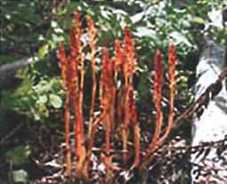

Take the 'One Step Challenge'. Staying on the trail, take one GIANT step forward and make a note of the distance between your left and right footsteps. Now, examine the surface on either side of the trail along this distance. See if you can count at least 10 different kinds of plants. You might have to get down on your knees and poke your nose through the greenery. Surprising how much variety you can uncover  in the space of a single footstep!
You might even find a pale plant of medium height, covered with red or purplish spots.This is the spotted coralroot - an orchid species. This plant has no chlorophyll. It is saprophytic, which means it obtains its nutrients from dead organic matter through a cooperative - or symbiotic - relationship with a fungus.
As you continue, look for the characteristic white trunk of the trembling aspen emerging in the distance. A mixedwood forest of poplars and spruce lies ahead.